컴퓨터응용가공산업기사 (2017-03-05 기출문제)
1과목: 기계가공법 및 안전관리
1. 20℃에서 20mm인 게이지 블록이 손과 접촉 후 온도가 36℃가 되었을 때, 게이지 블록에 생긴 오차는 몇 mm인가? (단, 선팽창계수는 1.0×10-6/℃이다.)
- 3.2×10-4
- 3.2×10-3
- 6.4×10-4
- 6.4×10-3
(정답률: 50%)

2. 상향절삭과 하향절삭에 대한 설명으로 틀린 것은?
- 하향절삭은 상향절삭보다 표면거칠기가 우수하다.
- 상향절삭은 하향절삭에 비해 공구의 수명이 짧다.
- 상향절삭은 하향절삭과는 달리 백래시 제거장치가 필요하다.
- 상향절삭은 하향절삭할 때보다 가공물을 견고하게 고정하여야 한다.
(정답률: 84%)
3. 절삭공구의 절삭면에 평행하게 마모되는 현상은?
- 치핑(chiping0
- 플랭크 마모(flank wear)
- 크레이터 마모(creat wear)
- 온도파손(temperature failure)
(정답률: 75%)
4. 드릴작업에 대한 설명으로 적절하지 않은 것은?
- 드릴작업은 항상 시작할 때보다 끝날 때 이송을 빠르게 한다.
- 지름이 큰 드릴을 사용할 때는 바이스를 테이블에 고정한다.
- 드릴은 사용 전에 점검하고 마모나 균열이 있는 것은 사용하지 않는다.
- 드릴이나 드릴 소켓을 뽑을 때는 전용공구를 사용하고 해머 등으로 두드리지 않는다.
(정답률: 90%)
5. 절삭공작기계가 아닌 것은?
- 선반
- 연삭기
- 플레이너
- 굽힘 프레스
(정답률: 88%)
6. 기어 절삭기에서 창성법으로 치형을 가공하는 공구가 아닌 것은?
- 호브(hob)
- 브로치(broach)
- 래크 커터(rack cutter)
- 피니언 커터(pinion cutter)
(정답률: 79%)
7. CNC기계의 움직임을 전기적인 신호로 속도와 위치를 피드백하는 장치는?
- 리졸버(resolver)
- 컨트롤러(controller)
- 볼 스크루(ball screw)
- 페리티 체크(parity-check)
(정답률: 77%)
8. 그림에서 플러그 게이지의 기울기가 0.⑤일 때, M2의 길이[mm]는? (단, 그림의 치수단위는 mm이다.)
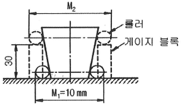
- 10.5
- 11.5
- 13
- 16
(정답률: 54%)
9. 연삭 숫돌의 표시에 대한 설명이 옳은 것은?
- 연삭입자 C는 갈색 알루미나를 의미한다.
- 결합제 R은 레지노이드 결합제를 의미한다.
- 연삭 숫돌의 입도 #100이 #300보다 입자의 크기가 크다.
- 결합도 K 이하는 경한 숫돌, L ~ O는 중각 정도 숫돌, P 이상은 연한 숫돌이다.
(정답률: 65%)
10. 삼각함수에 의하여 각도를 길이로 계산하여 간접적으로 각도를 구하는 방법으로, 블록 게이지와 함께 사용하는 측정기는?
- 사인 바
- 베벨 각도기
- 오토 콜리메이터
- 콤비네이션 세트
(정답률: 85%)
11. 선반을 설계할 때 고려할 사항으로 틀린 것은?
- 고장이 적고 기계효율이 좋을 것
- 취급이 간단하고 수리가 용이할 것
- 강력 절삭이 되고 절삭 능률이 클 것
- 기계적 마모가 높고, 가격이 저렴할 것
(정답률: 90%)
12. 선반의 주요 구조부가 아닌 것은?
- 베드
- 심압대
- 주축대
- 회전 테이블
(정답률: 84%)
13. 드릴 머신으로서 할 수 없는 작업은?
- 널링
- 스폿 페이싱
- 카운터 보링
- 카운더 싱킹
(정답률: 87%)
14. 일반적인 손다듬질 작업 공정순서로 옳은 것은?
- 정 → 줄 → 스크레이퍼 → 쇠톱
- 줄 → 스크레이퍼 → 쇠톱 → 정
- 쇠톱 → 정 → 줄 → 스크레이퍼
- 스크레이퍼 → 정 → 쇠톱 → 줄
(정답률: 79%)
15. 밀링작업의 단식 분할법에서 원주를 15등분 하려고 한다. 이 때 분할대 크랭크의 회전수를 구하고, 15구멍열 분할판을 몇 구멍씩 보내면 되는가?
- 1회전에 10구멍씩
- 2회전에 10구멍씩
- 3회전에 10구멍씩
- 4회전에 10구멍씩
(정답률: 57%)
16. 선반에서 맨드릴(mandrel)의 종류가 아닌 것은?
- 갱 맨드릴
- 나사 맨드릴
- 이동식 맨드릴
- 테이퍼 맨드릴
(정답률: 49%)
17. 구멍가공을 하기 위해서 가공물을 고정시키고 드릴이 가공 위치로 이동할 수 있도록 제작된 드릴링 머신은?
- 다두 드릴링 머신
- 다축 드릴링 머신
- 탁상 드릴링 머신
- 레이디얼 드릴링 머신
(정답률: 69%)
18. 나사연삭기의 연삭방법이 아닌 것은?
- 다인 나사연삭 방법
- 단식 나사연삭 방법
- 역식 나사연삭 방법
- 센터리스 나사연삭 방법
(정답률: 52%)
19. 주축의 회전운동을 직선 왕복운동으로 변화시킬 때 사용하는 밀링 부속장치는?
- 바이스
- 분할대
- 슬로팅 장치
- 래크 절삭 장치
(정답률: 80%)
20. 일감에 회전운동과 이송을 주며, 숫돌을 일감표면에 약한 압력으로 눌러 대고 다듬질할 면에 따라 매우 작고 빠른 진동을 주어 가공하는 방법은?
- 래핑
- 드레싱
- 드릴링
- 슈퍼 피니싱
(정답률: 78%)
2과목: 기계설계 및 기계재료
21. 구리합금 중 최고의 강도를 가진 석출 경화성 합금으로 내열성, 내식성이 우수하여 베어링 및 고급 스프링 재료로 이용되는 청동은?
- 납청동
- 인청동
- 베릴륨 청동
- 알루미늄 청동
(정답률: 69%)
22. 주철에서 탄소강과 같이 강인성이 우수한 조직을 만들 수 있는 흑연 모양은?
- 편상흑연
- 괴상흑연
- 구상흑연
- 공정상흑연
(정답률: 81%)
23. 열간 가공과 냉간 가공을 구별하는 온도는?
- 포정 온도
- 공석 온도
- 공정 온도
- 재결정 온도
(정답률: 79%)
24. 다음 중 발전기, 전동기, 변압기 등의 철심 재료에 가장 적합한 특수강은?
- 규소강
- 베어링강
- 스프링강
- 고속도공구강
(정답률: 61%)
25. 알루미늄의 성질로 틀린 것은?
- 비중이 약 7.8이다.
- 면심입방격자 구조이다.
- 용융점은 약 660℃이다.
- 대기 중에서는 내식성이 좋다.
(정답률: 66%)
26. 플라스틱 재료의 일반적인 성질을 설명한 것 중 틀린 것은?
- 열에 약하다.
- 성형성이 좋다.
- 표면경도가 높다.
- 대부분 전기 절연성이 좋다.
(정답률: 78%)
27. 담금질 조직 중에 냉각속도가 가장 빠를 때 나타나는 조직은?
- 소르바이트
- 마텐자이트
- 오스테나이트
- 트루스타이트
(정답률: 70%)
28. 소결합금으로 된 공구강은?
- 초경합금
- 스프링강
- 탄소공구강
- 기계구조용강
(정답률: 75%)
29. 담금질한 강재의 잔류 오스테나이트를 제거하며, 치수변화 등을 방지하는 목적으로 0℃이하에서 열처리하는 방법은?
- 저온뜨임
- 심냉처리
- 마템퍼링
- 용체화처리
(정답률: 79%)
30. 공구 재료가 갖추어야 할 일반적 성질 중 틀린 것은?
- 인성이 클 것
- 취성이 클 것
- 고온경도가 클 것
- 내마멸성이 클 것
(정답률: 75%)
31. 용접이음의 단점에 속하지 않는 것은?
- 내부 결함이 생기기 쉽고 정확한 검사가 어렵다.
- 용접공의 기능에 따라 용접부의 강도가 좌우된다.
- 다른 이음작업과 비교하여 작업 공정이 많은 편이다.
- 잔류응력이 발생하기 쉬워서 이를 제거하는 작업이 필요하다.
(정답률: 74%)
32. 전달동력 2.4kW, 회전수 1800 rpm을 전달하는 축의 지름은 약 몇 mm 이상으로 해야 하는가? (단, 축의 허용전단응력은 20MPa이다.)
- 20
- 12
- 15
- 17
(정답률: 38%)
33. 0.45t의 물체를 지지하는 아이 볼트에서 볼트의 허용인장응력이 48MPa라 할 때, 다음 미터 나사 중 가장 적합한 것은? (단, 나사 바깥지름은 골지름의 1.25배로 가정하고, 적합한 사양 중 가장 작은 크기를 선정한다.
- M14
- M16
- M18
- M20
(정답률: 38%)
34. 볼 베어링에서 수명에 대한 설명으로 옳은 것은?
- 베어링에 작용하는 하중의 3승에 비례한다.
- 베어링에 작용하는 하중의 3승에 반비례한다.
- 베어링에 작용하는 하중의 10/3승에 비례한다.
- 베어링에 작용하는 하중의 10/3승에 반비례한다.
(정답률: 63%)
35. 원형 봉에 비틀림 모멘트를 가할 때 비틀림 변형이 생기는데, 이 때 나타나는 탄성을 이용한 스프링은?
- 토션 바
- 벌류트 스프링
- 와이어 스프링
- 비틀림 코일스프링
(정답률: 48%)
36. 기어의 피치원 지름이 무한대로 회전운동을 직선운동으로 바꿀 때 사용하는 기어는?
- 베벨 기어
- 헬리컬 기어
- 래크와 피니언
- 웜 기어
(정답률: 71%)
37. 주로 회전운동을 왕복운동으로 변환시키는 데 사용하는 기계요소로서 내연기관의 밸브 개폐기구 등에 사용되는 것은?
- 마찰자(friction wheel)
- 클러치(clutch)
- 기어(gear)
- 캠(cam)
(정답률: 66%)
38. 잇수 32, 피치 12.7mm, 회전수 500rpm의 스프로킷 휠에 50번 롤러 체인을 사용하였을 경우 전달동력은 약 몇 kW인가? (단, 50번 롤러 체인의 파단하중은 22.10kN, 안전율은 15이다.)
- 7.8
- 6.4
- 5.6
- 5.0
(정답률: 19%)
39. 드럼의 지름 600mm인 브레이크 시스템에서 98.1Nㆍm의 제동 토크를 발생시키고자 할 때 블록을 드럼에 밀어붙이는 힘은 약 몇 kN인가? (단, 접촉부 마찰계수는 0.3이다.)
- 0.54
- 1.09
- 1.51
- 1.96
(정답률: 41%)
40. 묻힘 키(sunk key)에 생기는 전단응력을 r, 압축응력을 σc라고 할 때,
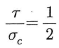
이면 키 폭b와 높이 h의 관계식으로 옳은 것은? (단, 키 홈의 높이는 키 높이의 1/2이다.)- b=h
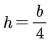
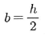
- b=2h
(정답률: 42%)
3과목: 컴퓨터응용가공
41. 다음 그림과 같이 x2+y2-2=0인 원이 있다. 점P(1,1)에서의 접선의 방정식은?
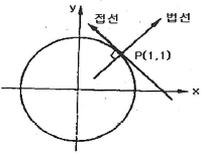
- (x+1)+(y+1)=0
- (x-1)-(y-1)=0
- 2(x+1)+2(y-1)=0
- 2(x-1)+2(y-1)=0
(정답률: 44%)
42. 조립체 모델링에서 조립체를 구성하는 인스턴스(instance)에 필요한 정보는?
- 형상모델링 정보
- 부품 형상 및 조립 정보
- 형상을 나타내는 기하 정보
- 형상을 구속하는 치수 정보
(정답률: 66%)
43. 서피스 모델링(surface modeling)방식으로 정의된 곡면의 일부를 절단하면 어느 형태의 도형인가?
- 점
- 곡면
- 곡선
- 평면
(정답률: 64%)
44. CAD/CAM 시스템에서 3차원에서 이미 구성된 도형자료를 다음 그림과 같이 y축을 기준으로 회전 변환시킬 때의 변환행렬식(Ty)으로 옳은 것은?
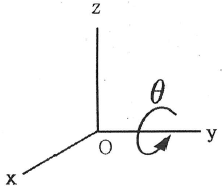
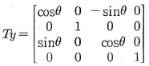
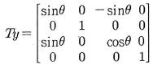
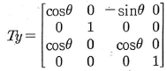
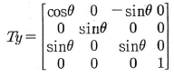
(정답률: 51%)
45. 컴퓨터에서 자료표현의 최소단위는?
- bit
- byte
- field
- word
(정답률: 77%)
46. B-Rep 모델의 기본 요소가 아닌 것은?
- 면(face)
- 모서리(dege)
- 꼭지점(vertex)
- 좌표(coordinates)
(정답률: 74%)
47. CAD 시스템의 형상모델링에서 원추단면곡선을 음함수형태로 표시할 경우 타원(Ellips)의 방정식을 표현한 함수는?
- y2+4ax=0
- x2+y2-r2=0
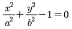
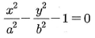
(정답률: 58%)
48. 주기억 장치와 CPU(중앙처리장치)사이에서 속도 차이를 줄이기 위해 데이터와 명령어를 일시적으로 저장하는 고속 기억 장치는?
- core memory
- cache memory
- volatile memory
- associative memory
(정답률: 79%)
49. 아래 그림에 나타난 작업에 해당하는 절삭 공정은?
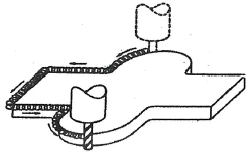
- 2차원 윤곽제어(2D contouring)
- 3차원 곡면제어(3D sculpturing)
- 4차원 동작제어(4D motion control)
- 2차원 위치제어(point-to-point control)
(정답률: 77%)
50. RP공정 중 Stratasys사에 의하여 상용화된 공정으로 열가소성수지를 액체 상태로 압축하여 각 층을 만드는 공정은?
- SGC
- LOM
- FDM
- SLS
(정답률: 48%)
51. NURBS 곡선의 표현식으로 알맞은 것은? (단,
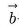
는 조정점, h는 동차 좌표, Ni,k는 블렌딩 함수를 각각 의미한다.)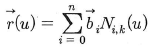
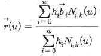
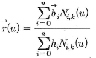
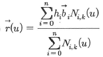
(정답률: 48%)
52. 면 위의 점에서 법선벡터를 N, 면 위의 점으로부터 관찰자 눈으로 향하는 벡터를 M이라고 할 때, 관찰자의 눈에 보이지 않는 면에 대한 표현으로 알맞은 것은?
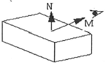
- MㆍN＞0
- MㆍN＜0
- MㆍN=0
- M=N
(정답률: 63%)
53. 솔리드모델링 시스템 중 CSG 트리구조의 장점으로 틀린 것은?
- 파라메트릭 모델링을 쉽게 구현할 수 있다.
- CSG트리에 저장된 솔리드는 항상 구현이 가능한 유효한 입체이다.
- 자료 구조가 간단하고 데이터의 양이 적어 테이터의 관리가 용이하다.
- CSG 트리 표현으로부터 물체의 경계면, 경계모서리, 그리고 이들 간의 연결관계 등을 유도해내는 데 계산이 적어 시간이 적게 걸린다.
(정답률: 48%)
54. 볼 엔드밀을 사용하여 3축 NC 기계를 위한 CL(Cutter Location)데이터를 구하고자 할 때 필요한 데이터가 아닌 것은?
- 공구(엔드밀)의 반경
- 곡면의 해당 점에서의 위치벡터
- 공구의 물성치
- 곡면의 해당 점에서의 단위 법선벡터
(정답률: 74%)
55. 밀링작업 중 face-milling 가공에서 절삭속도가 60m/min, 공구의 직경이 100mm일 때 공구의 회전수는 약 얼마인가?
- 171rpm
- 191rpm
- 211rpm
- 231rpm
(정답률: 71%)
56. CAD/CAM 소프트웨어 간의 인터페이스 방식으로만 나열된 것은?
- GKS, IGES, DXF, STEP
- RS232C, DTE, DCE, DSR
- RS232C, GKS, IGES, DXF
- RS232C, RS232C표준, DTE, DCE
(정답률: 74%)
57. 4개의 경계곡선이 주어진 경우, 경계곡선(boundary curve)내부를 부드러운 곡선으로 채워 정의되는 곡면은?
- Bezier 곡면
- Coons 곡면
- Sweep 곡면
- Ferguson 곡면
(정답률: 76%)
58. 두 벡터에 동시에 수직한 벡터를 구하고자 할 때 사용하는 방법은?
- 두 벡터를 dot product 한다.
- 두 벡터를 unit vector화 한다.
- 두 벡터를 cross product 한다.
- 두 벡터를 scalar product 한다.
(정답률: 69%)
59. CAD/CAM 시스템의 곡선표현 방식에서 Bezier곡선에 대한 설명으로 틀린 것은?
- 블렌딩 함수는 정규화 특성을 만족한다.
- 조정점의 순서가 거꾸로 되면, 다른 곡선이 생성된다.
- 모델링된 곡선은 첫 번째 조정점과 마지막 조정점을 지난다.
- 블렌딩 함수로 번스타인 다항식(Bernstein Polynomial)을 사용한다.
(정답률: 62%)
60. CAD에서 기하학적 형상(Geometric Model)을 나타내는 방법 중 모서리의 점, 선으로만 3차원 형상을 표시화하는 방법은?
- solid modeling
- shaded modeling
- surface modeling
- wire frame modeling
(정답률: 71%)
4과목: 기계제도 및 CNC공작법
61. 구름 베어링의 호칭 번호가 6001일 때 안지름은 몇 mm인가?
- 10
- 11
- 12
- 13
(정답률: 64%)
62. 그림과 같은 도면에서 평면도로 가장 적합한 것은?
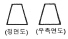
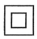
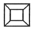
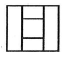
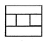
(정답률: 78%)
63. 배관도면에서 다음과 같이 배관이 표시되었을 때 이에 관한 설명 중 잘못된 것은?
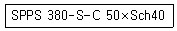
- 압력배관용 탄소강관이다.
- 호칭 지름은 50이다.
- 호칭 두께는 Sch40이다.
- 열간 가공하여 이음매 없는 강관이다.
(정답률: 62%)
64. 가공 방법에 관한 약호에서 스크레이퍼 가공을 의미하는 것은?
- FR
- FL
- FF
- FS
(정답률: 75%)
65. 다음 도면 배치 중에서 제3각법에 의한 배치 내용이 아닌 것은?
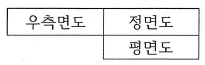
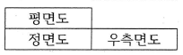
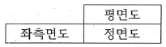
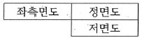
(정답률: 74%)
66. 가상선의 용도에 대한 설명으로 틀린 것은?
- 인접부분을 참고로 표시하는 선
- 공구, 지그 등의 위치를 참고로 표시하는 선
- 가동부분의 이동한계 위치를 표시하는 선
- 가공면이 평면임을 나타내는 선
(정답률: 68%)
67. 축의 도시방법에 관한 설명으로 틀린 것은?
- 축의 구석부나 단이 형성되어 있는 부분에 형상에 대한 세부적인 지시가 필요할 경우 부분 확대도로 표시할 수 있다.
- 긴축은 단축하여 그릴 수 있으나 길이는 실제 길이를 기입해야 한다.
- 축은 일반적으로 길이방향으로 단면 도시하여 나타낼 수 있다.
- 축의 절단면은 90도 회전하여 회전도시 단면도로 나타낼 수 있다.
(정답률: 52%)
68. 나사의 종류를 표시하는 기호가 잘못 연결된 것은?
- 30도 사다리꼴 나사 : TW
- 유니파이 보통 나사 : UNC
- 유니파이 가는 나사 : UNF
- 미터 가는 나사 : M
(정답률: 71%)
69. 도면 부품란의 재료기호에 기입된 ‘SPS 6’는 어떤 재료를 의미하는가?
- 스프링 강재
- 스테인리스 압연강재
- 냉간압연 강판
- 기계구조용 탄소강재
(정답률: 73%)
70. 다음 중 억지 끼워 맞춤에 해당하는 것은?
- H7/g6
- H7/s6
- H7/k6
- H7/m6
(정답률: 66%)
71. 머시닝센터에서 증분 좌표치를 나타내는 G코드는?
- G49
- G90
- G91
- G92
(정답률: 66%)
72. 다음 CNC 프로그램의 회전수는 약 얼마인가?
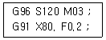
- 450rpm
- 477rpm
- 487rpm
- 500rpm
(정답률: 67%)
73. CNC 공작기계 이송장치의 이송나사로 주로 사용되는 것은?
- 볼나사
- 사각나사
- 사다리꼴나사
- 유니파이나사
(정답률: 73%)
74. CNC 선반에서 공구보정(offset)번호 6번을 선택하여, 1번 공구를 사용하려고 할 때 공구지령으로 옳은 것은?
- T0601
- T0106
- T1060
- T6010
(정답률: 78%)
75. 머시닝 센터에서 ø20, 4날 엔드밀을 사용하여 SM45C를 가공할 때, 프로그램에서 지령해야 할 이송량(mm/min)은 약 얼마인가? (단, SM45C의 절삭 속도는 100m/min, 공구의 날당 이송량은 0.⑤mm/tooth 이다.)
- 118
- 218
- 268
- 318
(정답률: 48%)
76. 일반적인 머시닝 센터의 일상 점검 사항으로 거리가 먼 것은?
- 각부 작동 점검
- 각부 압력 점검
- 각부 유량 점검
- 기계 정도 검사
(정답률: 75%)
77. CNC 공작기계의 좌표치 입력방법에서 메트릭 입력 명령어는?
- G17
- G20
- G21
- G28
(정답률: 46%)
78. 공구의 이동 중에는 가공을 행하지 않으며 드릴링 머신이나 스폿 용접기 등에 사용되는 PTP(Point To Point)제어방식은?
- 윤곽제어
- 직선절삭제어
- 위치결정제어
- 연속경로제어
(정답률: 74%)
79. CNC 선반으로 다음 그림의 A에서 B로 가공하려고 할 때 지령으로 옳은 것은?
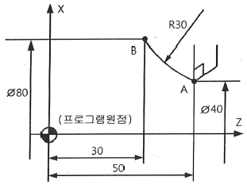
- GO2 X40. Z50. R30. F0.25 ;
- GO2 X80. W30. R30. F0.25 ;
- GO2 U80. W-20. R30. F0.25 ;
- GO2 U40. W-20. R30. F0.25 ;
(정답률: 56%)
80. 와이어 컷 방전가공에서 세컨드 컷(second cut)을 실시함으로써 얻을 수 있는 주된 효과는?
- 다이 형상의 돌기부분을 제거할 수 있다.
- 이온교환수지의 수명을 연장한다.
- 와이어를 절약할 수 있다.
- 가공시간을 줄일 수 있다.
(정답률: 70%)
길이 변화량 = 초기 길이 × 선팽창계수 × 온도 변화량
= 20mm × 1.0×10-6/℃ × 16℃
= 3.2×10-4mm
따라서, 정답은 "3.2×10-4"이다.